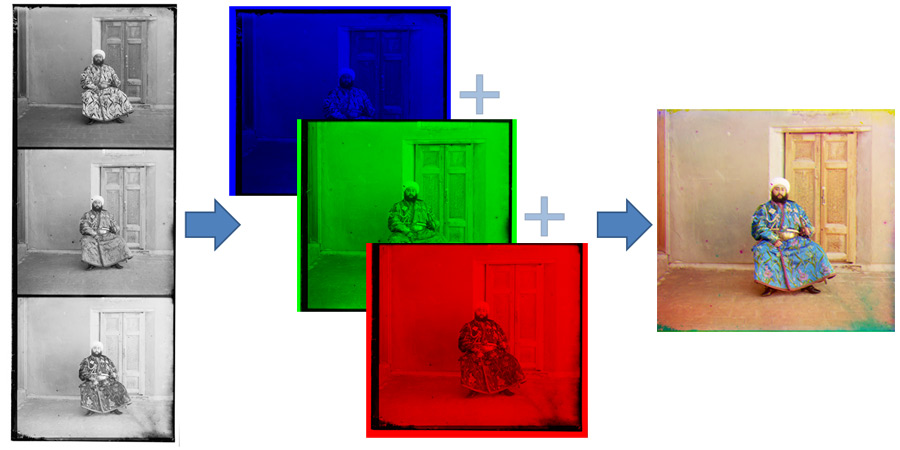
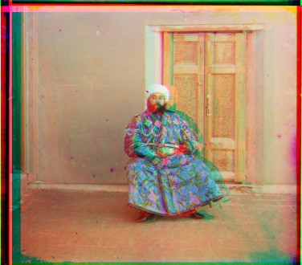

Purpose
This project aims to produce color photos by aligning and combining three grayscale images each representing one color channel (red, green, and blue). This process of taking pictures through color filters and combining them afterwards was invented by photographer Sergei Mikhailovich Prokudin-Gorskii (1863-1944), producing the first color photos in the world.

Algorithm
Alignment
The process of producing the final image consists of the following steps: crop the original image into 3 equal size images, align the images, then recombine them in their color channels.
For this project, I only had to work on the alignment portion of it.
I shifted the green channel and red channel images to the blue channel image. The metrics used for alignment is simple. It was given that we can assume that the best alignment can be found by shifting the images up to 15 pixels in each direction. I shifted the green channel and red channel images 16 pixels in each direction and compared obtained the sum of squared differences between each shifted image and the blue channel image. I record the amount of shifting that produced the least sum of squared differences, and use that value for alignment.
Image Pyramid Optimization
An exhaustive search of the optimal translation will be very computationally expensive on large images or with large shift ranges. To remedy this, a coarse-to-fine searching algorithm can be applied using image pyramids.
I downsampled the images 4 times, and started searching for the optimal shift position from the most coarse image, which in this case is 1/16 the size of the original image. This approach greatly improves the speed of the operation.
Extra Credits
I tried to remove some of the borders on the images prior to alignment, so as to improve the accuracy. I calculated the average intensities of an entire row or column, starting from the borders. If the average value of a row or column in the image is close to 1 or 0, I treat it as a border and remove that number of rows and columns from the images of all three color channels.
Results
Conclusion
Since my range for searching for the optimal shift is only 16 pixels wide, the alignment did not work very well on very large images, where the displacement could be way beyond 15 pixels.
Interestingly, image alignments look different depending on how many levels of the image pyramid was utilized. For example, the picture of the Tzar looks better with 3 levels of image pyramid compared to the image produced by using 5 levels of the image pyramid.
Some other pictures look better with more levels of the image pyramid. This suggests that some information could be lost during the downsampling process that might alter the alignment of the images.
3 image pyramid levels
5 image pyramid levels